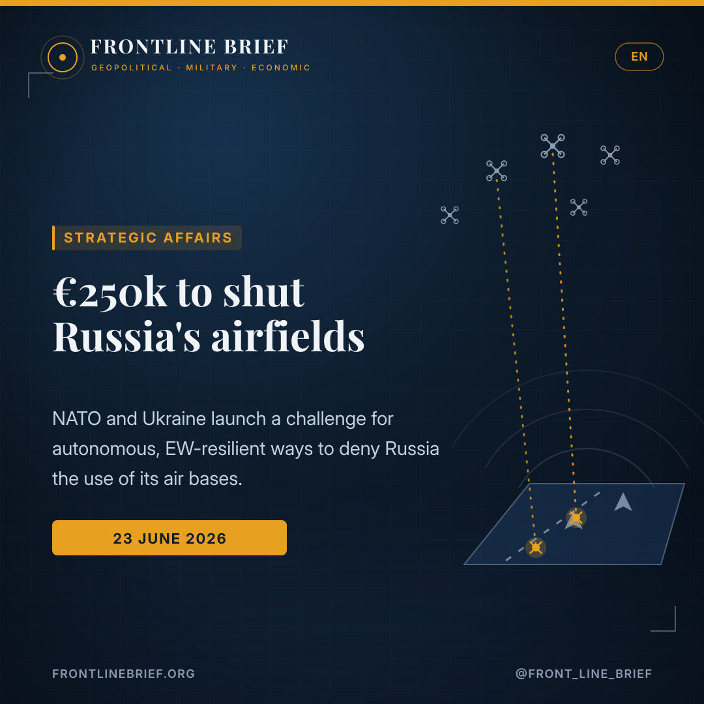
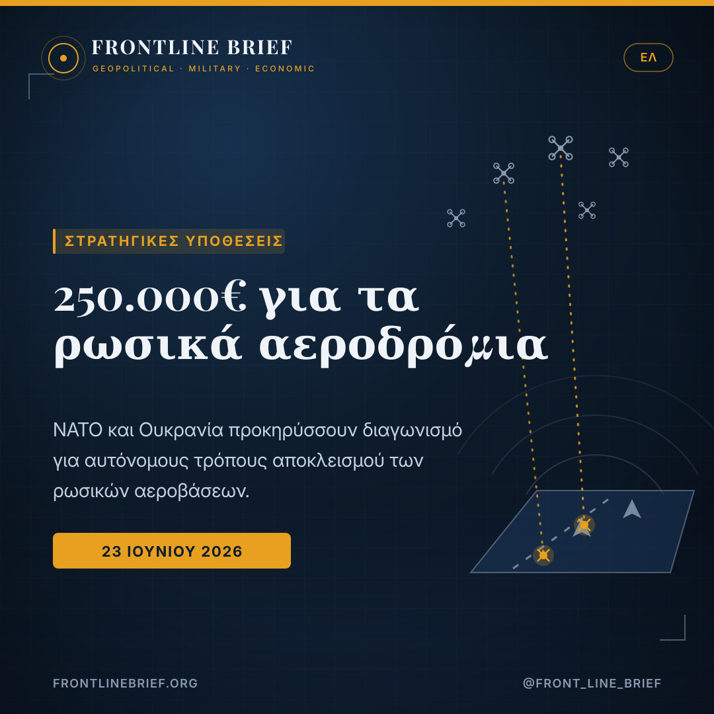
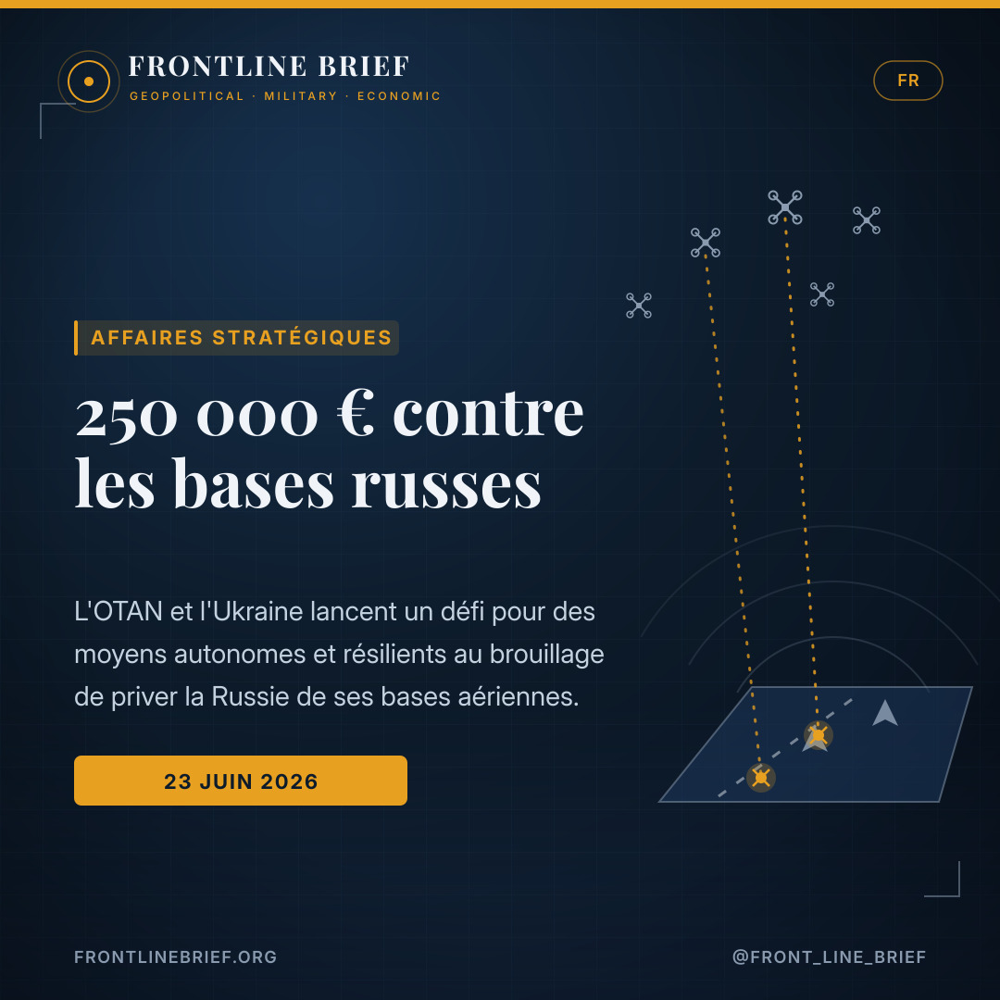
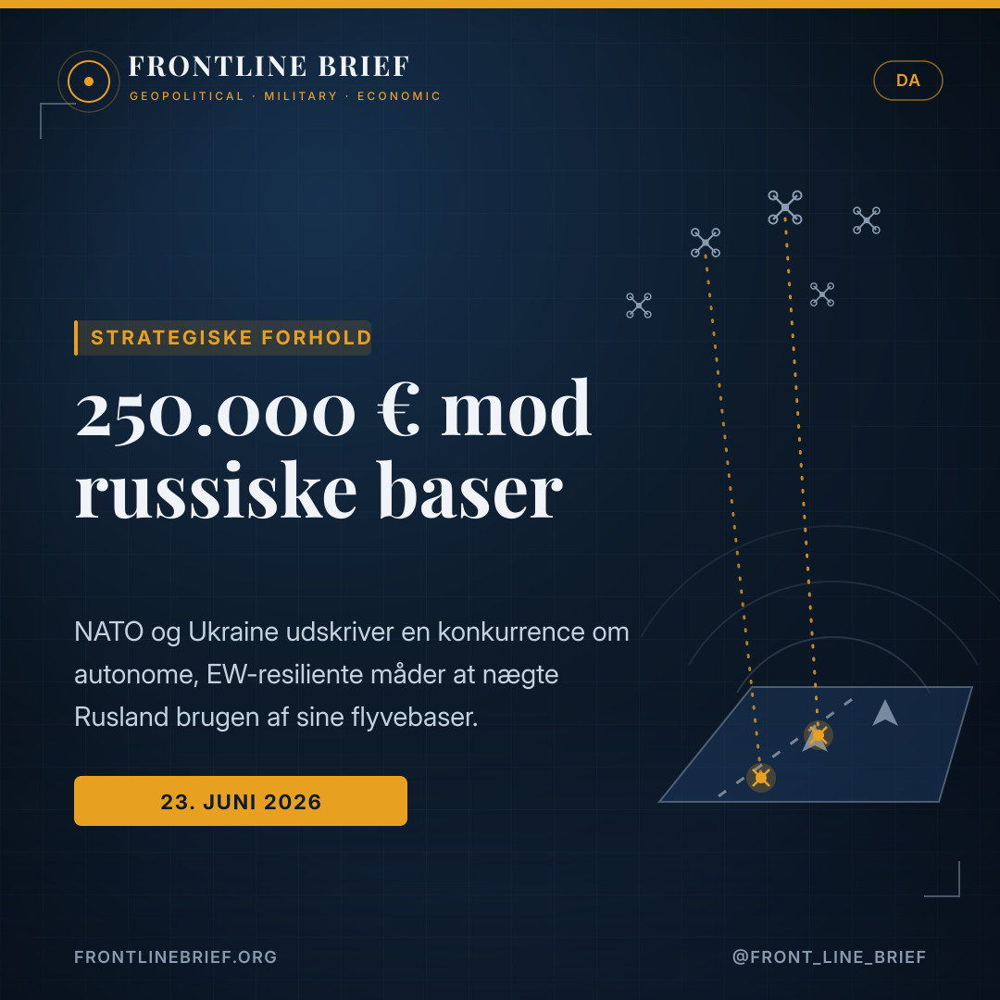
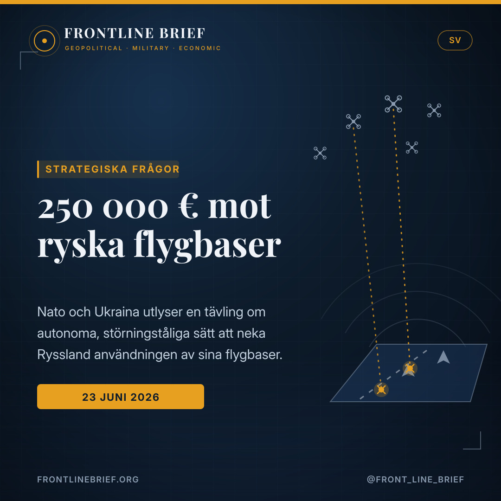

A €250,000 bounty to ground Russia's jets: NATO and Ukraine ask startups to shut the airfields
NATO's transformation command and its joint centre with Ukraine have opened a €250,000 challenge for the private sector: find an autonomous, jam-proof way to persistently deny Russia the use of its air bases. The logic is simple and stark — every sortie starts on a runway, so close the runway and the air war is disrupted at its source.





A contest, not a contract
NATO's Allied Command Transformation and the NATO-Ukraine JATEC centre have launched the Persistent Airfield Denial Innovation Challenge. Submissions close 20 July, ten finalists are named 11 August, and a pitch day follows on 3 September, tentatively in Poland.
Deny it at the source
Russian tactical aviation strikes from rear bases beyond Ukrainian reach, using glide bombs, cruise missiles and stand-off weapons. Existing tools lack the mass, persistence and EW-resilience to suppress an airfield. NATO calls every base a node of vulnerability.
Fielded within a year
Drones, loitering munitions, swarms or hybrids that work in GPS-denied, EW-contested conditions, in all weather, with AI-assisted targeting and minimal training. Anything that would take more than a year to field will not be considered.
A prize for grounding Russian air power
NATO and Ukraine are putting money on the table to solve a problem their conventional arsenals have not. Through the NATO-Ukraine Joint Analysis, Training and Education Centre (JATEC) and NATO's Allied Command Transformation, they have opened the Persistent Airfield Denial Innovation Challenge, offering a €250,000 award to any company, startup or engineering team that can devise a workable way to stop Russia using its air bases. Submissions close on 20 July, ten finalists will be chosen on 11 August, and the shortlist will pitch on 3 September, provisionally in Poland.
Why airfields are the target
The reasoning is set out bluntly by NATO's Supreme Allied Commander Transformation. Russia's ability to project air power from secure rear-area airfields, beyond the reach of Ukrainian strike assets, is described as one of the most consequential asymmetries of the war. From those bases, Russian tactical aviation keeps launching guided glide bombs, cruise missiles and stand-off munitions against Ukrainian forces, infrastructure and cities. Every sortie, the command notes, begins at an airfield, and every airfield is therefore a node of vulnerability: deny it persistently, and the campaign is disrupted at its source.
Every sortie starts at an airfield — and NATO's bet is that if the runway can be denied at the source, the whole air campaign unravels.
What NATO is asking for
The challenge is deliberately technology-agnostic. NATO says it will look at uncrewed aerial systems of any range class, autonomous or semi-autonomous loitering munitions, swarming and mass-effect concepts, alternative delivery mechanisms beyond conventional aircraft, and hybrid combinations of all of these. What it will not accept is the status quo: manned strike aviation, long-range rocket artillery and ballistic missiles, and one-off loitering munitions are judged to lack the mass, persistence and electronic-warfare resilience needed to shut down a defended airfield across many aim points at once.
The fine print: autonomous, EW-proof, fast
The requirements are demanding. Any solution must work in GPS-denied and EW-contested environments, in all weathers and seasons, and reach deep into defended airspace. It must operate without continuous human control, ideally fully autonomously, and put enough mass and precision over a target to suppress multiple points on an airfield simultaneously. NATO also wants minimal training and AI-assisted target recognition that reduces reliance on expert operators. Crucially, anything that would take more than a year to field is out of scope, and entries are expected to sit in the mid-to-upper bands of the technology-readiness scale.
The catch
Whether a contest will deliver what years of fighting have not is an open question. Ukraine already runs one of the most inventive defence-technology ecosystems anywhere, turning out drones, missiles and novel weapons under fire, yet it has not been able to close Russia's airfields. The binding constraints are money and scale: Kyiv struggles to mass-produce sophisticated systems and to sustain supply chains. A €250,000 prize, backed by NATO's wider funding for Ukrainian weapons, can surface an idea, but turning that idea into fielded mass quickly enough to matter remains the hardest part.
Έπαθλο για να καθηλωθεί η ρωσική αεροπορία
ΝΑΤΟ και Ουκρανία βάζουν χρήματα στο τραπέζι για ένα πρόβλημα που τα συμβατικά οπλοστάσιά τους δεν έλυσαν. Μέσω του Κοινού Κέντρου Ανάλυσης, Εκπαίδευσης και Κατάρτισης ΝΑΤΟ-Ουκρανίας (JATEC) και της Συμμαχικής Διοίκησης Μετασχηματισμού του ΝΑΤΟ, προκήρυξαν τον Διαγωνισμό Καινοτομίας για τον Μόνιμο Αποκλεισμό Αεροδρομίων, με έπαθλο 250.000 ευρώ σε όποια εταιρεία, startup ή ομάδα μηχανικών βρει έναν εφαρμόσιμο τρόπο να εμποδίσει τη Ρωσία να χρησιμοποιεί τις αεροπορικές της βάσεις. Οι υποβολές κλείνουν στις 20 Ιουλίου, δέκα φιναλίστ θα επιλεγούν στις 11 Αυγούστου, και η παρουσίαση των προτάσεων θα γίνει στις 3 Σεπτεμβρίου, κατά πάσα πιθανότητα στην Πολωνία.
Γιατί στόχος είναι τα αεροδρόμια
Το σκεπτικό το θέτει ωμά η Συμμαχική Διοίκηση Μετασχηματισμού. Η ικανότητα της Ρωσίας να προβάλλει αεροπορική ισχύ από ασφαλείς βάσεις στα μετόπισθεν, μακριά από την εμβέλεια των ουκρανικών μέσων προσβολής, χαρακτηρίζεται μία από τις πιο καθοριστικές ασυμμετρίες του πολέμου. Από εκεί, η ρωσική τακτική αεροπορία εξαπολύει συνεχώς κατευθυνόμενες βόμβες ολίσθησης, πυραύλους cruise και όπλα εκτός βεληνεκούς εναντίον ουκρανικών δυνάμεων, υποδομών και πόλεων. Κάθε έξοδος, σημειώνει η Διοίκηση, ξεκινά από ένα αεροδρόμιο, και κάθε αεροδρόμιο είναι συνεπώς ένας κόμβος τρωτότητας: αν αποκλειστεί μόνιμα, η εκστρατεία διαταράσσεται στην πηγή της.
Κάθε έξοδος ξεκινά από ένα αεροδρόμιο — και το στοίχημα του ΝΑΤΟ είναι ότι αν ο διάδρομος αποκλειστεί στην πηγή, καταρρέει όλη η αεροπορική εκστρατεία.
Τι ζητάει το ΝΑΤΟ
Ο διαγωνισμός είναι σκόπιμα ουδέτερος ως προς την τεχνολογία. Το ΝΑΤΟ δηλώνει ότι θα εξετάσει μη επανδρωμένα εναέρια συστήματα κάθε κατηγορίας εμβέλειας, αυτόνομα ή ημιαυτόνομα πυρομαχικά περιφοράς, σμήνη και προσεγγίσεις μαζικής δράσης, εναλλακτικούς μηχανισμούς μεταφοράς πέρα από τα συμβατικά αεροσκάφη, καθώς και υβριδικούς συνδυασμούς όλων αυτών. Αυτό που δεν θα δεχθεί είναι το ισχύον μοντέλο: η επανδρωμένη αεροπορία κρούσης, το πυροβολικό εκτοξευτών μεγάλου βεληνεκούς, οι βαλλιστικοί πύραυλοι και τα μεμονωμένα πυρομαχικά περιφοράς κρίνονται ότι στερούνται της μάζας, της επιμονής και της ανθεκτικότητας στον ηλεκτρονικό πόλεμο που απαιτούνται για να εξουδετερωθεί ένα οργανωμένο αεροδρόμιο σε πολλά σημεία ταυτόχρονα.
Τα ψιλά γράμματα: αυτόνομο, ανθεκτικό στον EW, γρήγορο
Οι απαιτήσεις είναι υψηλές. Κάθε λύση πρέπει να λειτουργεί σε περιβάλλοντα χωρίς GPS και υπό παρεμβολές, σε κάθε καιρό και εποχή, και να φτάνει βαθιά σε αμυνόμενο εναέριο χώρο. Πρέπει να δρα χωρίς συνεχή ανθρώπινο έλεγχο, ιδανικά πλήρως αυτόνομα, και να συγκεντρώνει αρκετή μάζα και ακρίβεια ώστε να καταστέλλει πολλά σημεία ενός αεροδρομίου ταυτόχρονα. Το ΝΑΤΟ θέλει επίσης ελάχιστη εκπαίδευση και αναγνώριση στόχων με υποστήριξη τεχνητής νοημοσύνης, ώστε να μειώνεται η εξάρτηση από έμπειρους χειριστές. Κυρίως, ό,τι θα χρειαζόταν πάνω από έναν χρόνο για να μπει σε υπηρεσία αποκλείεται, ενώ οι προτάσεις αναμένεται να βρίσκονται στα μεσαία προς ανώτερα επίπεδα της κλίμακας τεχνολογικής ωριμότητας.
Η παγίδα
Το αν ένας διαγωνισμός θα φέρει αυτό που δεν έφεραν χρόνια μάχης μένει ανοιχτό ερώτημα. Η Ουκρανία διαθέτει ήδη ένα από τα πιο εφευρετικά οικοσυστήματα αμυντικής τεχνολογίας, παράγοντας drones, πυραύλους και πρωτότυπα όπλα υπό πραγματικές συνθήκες πολέμου, και όμως δεν κατάφερε να κλείσει τα ρωσικά αεροδρόμια. Οι δεσμευτικοί περιορισμοί είναι το χρήμα και η κλίμακα: το Κίεβο δυσκολεύεται να παράγει μαζικά σύνθετα συστήματα και να συντηρεί εφοδιαστικές αλυσίδες. Ένα έπαθλο 250.000 ευρώ, με τη στήριξη της ευρύτερης χρηματοδότησης του ΝΑΤΟ για ουκρανικά όπλα, μπορεί να αναδείξει μια ιδέα — το να μετατραπεί όμως αυτή σε μαζική παραγωγή αρκετά γρήγορα ώστε να μετρήσει, παραμένει το δυσκολότερο κομμάτι.
Une prime pour clouer au sol l'aviation russe
L'OTAN et l'Ukraine mettent de l'argent sur la table pour résoudre un problème que leurs arsenaux conventionnels n'ont pas réglé. Via le Centre conjoint OTAN-Ukraine d'analyse, de formation et d'entraînement (JATEC) et le Commandement allié Transformation, ils ont lancé le Défi d'innovation pour le déni persistant d'aérodromes, doté de 250 000 euros pour toute entreprise, start-up ou équipe d'ingénierie capable d'imaginer un moyen viable d'empêcher la Russie d'utiliser ses bases aériennes. Les candidatures ferment le 20 juillet, dix finalistes seront retenus le 11 août et la présentation aura lieu le 3 septembre, a priori en Pologne.
Pourquoi viser les aérodromes
Le raisonnement est posé sans détour par le Commandement allié Transformation. La capacité de la Russie à projeter sa puissance aérienne depuis des bases arrière sûres, hors de portée des moyens de frappe ukrainiens, est présentée comme l'une des asymétries les plus déterminantes de la guerre. De ces bases, l'aviation tactique russe lance sans relâche bombes planantes guidées, missiles de croisière et munitions de précision à distance contre les forces, les infrastructures et les villes ukrainiennes. Chaque sortie, souligne le commandement, part d'un aérodrome, et chaque aérodrome est donc un nœud de vulnérabilité : le neutraliser durablement, c'est perturber la campagne à sa source.
Chaque sortie part d'un aérodrome — et le pari de l'OTAN est qu'en neutralisant la piste à la source, toute la campagne aérienne se défait.
Ce que demande l'OTAN
Le défi est volontairement agnostique sur le plan technologique. L'OTAN dit examiner les systèmes aériens sans pilote de toute classe de portée, les munitions rôdeuses autonomes ou semi-autonomes, les concepts d'essaim et d'effet de masse, des mécanismes de livraison autres que les aéronefs classiques, et des combinaisons hybrides de tout cela. Ce qu'elle écarte, c'est le statu quo : aviation de frappe pilotée, artillerie de roquettes à longue portée, missiles balistiques et munitions rôdeuses isolées sont jugées dépourvues de la masse, de la persistance et de la résilience à la guerre électronique nécessaires pour neutraliser un aérodrome défendu sur de nombreux points à la fois.
Les petites lignes : autonome, anti-brouillage, rapide
Les exigences sont élevées. Toute solution doit fonctionner en environnement privé de GPS et soumis au brouillage, par tous temps et toutes saisons, et pénétrer profondément dans un espace aérien défendu. Elle doit agir sans contrôle humain continu, idéalement de façon pleinement autonome, et concentrer assez de masse et de précision pour neutraliser plusieurs points d'un aérodrome simultanément. L'OTAN veut aussi une formation minimale et une reconnaissance de cibles assistée par IA réduisant la dépendance aux opérateurs experts. Surtout, tout ce qui mettrait plus d'un an à être déployé est exclu, et les propositions sont attendues dans les niveaux intermédiaires à supérieurs de l'échelle de maturité technologique.
Le hic
Reste à savoir si un concours apportera ce que des années de combats n'ont pas donné. L'Ukraine dispose déjà de l'un des écosystèmes de technologie de défense les plus inventifs au monde, produisant drones, missiles et armes inédites sous le feu, sans pour autant parvenir à fermer les aérodromes russes. Les contraintes décisives sont l'argent et l'échelle : Kyiv peine à produire en masse des systèmes sophistiqués et à tenir ses chaînes d'approvisionnement. Une prime de 250 000 euros, adossée au financement plus large de l'OTAN pour les armes ukrainiennes, peut faire émerger une idée — mais la transformer assez vite en masse déployée demeure le plus difficile.
En dusør for at sætte russisk luftmagt på jorden
NATO og Ukraine lægger penge på bordet for at løse et problem, deres konventionelle arsenaler ikke har kunnet. Via det fælles NATO-Ukraine-center for analyse, træning og uddannelse (JATEC) og NATO's Allied Command Transformation har de åbnet innovationskonkurrencen om vedvarende lukning af flyvepladser med en dusør på 250.000 euro til enhver virksomhed, startup eller ingeniørgruppe, der kan finde en brugbar måde at hindre Rusland i at bruge sine flyvebaser. Fristen er 20. juli, ti finalister udvælges 11. august, og pitch-dagen er 3. september, formentlig i Polen.
Hvorfor flyvepladserne er målet
Begrundelsen lægges åbent frem af Allied Command Transformation. Ruslands evne til at projicere luftmagt fra sikre baglandsbaser, uden for rækkevidde af ukrainske angrebsmidler, beskrives som en af krigens mest afgørende asymmetrier. Herfra affyrer russisk taktisk luftvåben uophørligt styrede glidebomber, krydsermissiler og standoff-våben mod ukrainske styrker, infrastruktur og byer. Hver mission, bemærker kommandoen, udgår fra en flyveplads, og hver flyveplads er derfor et sårbarhedsknudepunkt: lukkes den vedvarende, forstyrres kampagnen ved kilden.
Hver mission udgår fra en flyveplads — og NATO's væddemål er, at hvis banen kan lukkes ved kilden, falder hele luftkampagnen fra hinanden.
Hvad NATO efterspørger
Konkurrencen er bevidst teknologineutral. NATO siger, at man vil se på ubemandede luftsystemer i enhver rækkeviddeklasse, autonome eller semiautonome loitermunitioner, sværm- og masseeffektkoncepter, alternative leveringsmekanismer ud over konventionelle fly samt hybride kombinationer af det hele. Det, man afviser, er status quo: bemandet angrebsfly, langtrækkende raketartilleri, ballistiske missiler og enkeltstående loitermunitioner vurderes at mangle den masse, vedholdenhed og modstandskraft over for elektronisk krigsførelse, der skal til for at lukke en forsvaret flyveplads på mange punkter på én gang.
Det med småt: autonomt, EW-sikkert, hurtigt
Kravene er hårde. Enhver løsning skal virke i GPS-nægtede og EW-truede miljøer, i al slags vejr og årstid, og nå dybt ind i forsvaret luftrum. Den skal fungere uden vedvarende menneskelig kontrol, helst fuldt autonomt, og samle nok masse og præcision til at undertrykke flere punkter på en flyveplads samtidig. NATO ønsker desuden minimal træning og AI-assisteret målgenkendelse, der mindsker afhængigheden af eksperter. Afgørende er, at alt, der ville tage mere end et år at indføre, er ude, og bidrag forventes at ligge i de mellem-til-øvre trin på skalaen for teknologisk modenhed.
Hagen ved det
Om en konkurrence kan levere det, som års kampe ikke har, er et åbent spørgsmål. Ukraine driver allerede et af verdens mest opfindsomme forsvarsteknologiske økosystemer og fremstiller droner, missiler og nye våben under ild, men har stadig ikke kunnet lukke de russiske flyvepladser. De bindende begrænsninger er penge og skala: Kyiv har svært ved at masseproducere avancerede systemer og opretholde forsyningskæder. En dusør på 250.000 euro, understøttet af NATO's bredere finansiering af ukrainske våben, kan løfte en idé frem — men at omsætte den til udbredt masse hurtigt nok til at gøre en forskel er fortsat det sværeste.
En dusör för att sätta ryskt flyg på marken
Nato och Ukraina lägger pengar på bordet för ett problem deras konventionella arsenaler inte löst. Genom det gemensamma Nato-Ukraina-centret för analys, träning och utbildning (JATEC) och Natos Allied Command Transformation har de öppnat innovationstävlingen för ihållande flygbasnekande, med 250 000 euro till varje företag, startup eller ingenjörsteam som kan ta fram ett fungerande sätt att hindra Ryssland från att använda sina flygbaser. Ansökningarna stänger 20 juli, tio finalister utses 11 augusti och pitchdagen hålls 3 september, troligen i Polen.
Varför flygbaserna är målet
Resonemanget läggs fram rakt av Allied Command Transformation. Rysslands förmåga att projicera luftmakt från säkra baser i bakre områden, utom räckhåll för ukrainska bekämpningsmedel, beskrivs som en av krigets mest avgörande asymmetrier. Därifrån avfyrar ryskt taktiskt flyg oavbrutet styrda glidbomber, kryssningsrobotar och standoff-vapen mot ukrainska styrkor, infrastruktur och städer. Varje företag, noterar kommandot, utgår från en flygbas, och varje flygbas är därför en sårbarhetsnod: nekas den varaktigt störs kampanjen vid källan.
Varje uppdrag startar på en flygbas — och Natos vad är att om banan kan nekas vid källan faller hela luftkampanjen samman.
Vad Nato efterfrågar
Tävlingen är medvetet teknikneutral. Nato säger sig vilja granska obemannade flygsystem i alla räckviddsklasser, autonoma eller halvautonoma kringströvande robotar, svärm- och masseffektkoncept, alternativa leveransmekanismer utöver konventionella flygplan samt hybrida kombinationer av allt detta. Det man avvisar är status quo: bemannat attackflyg, långräckviddigt raketartilleri, ballistiska robotar och enstaka kringströvande robotar bedöms sakna den massa, uthållighet och motståndskraft mot elektronisk krigföring som krävs för att slå ut en försvarad flygbas på många punkter samtidigt.
Det finstilta: autonomt, EW-säkert, snabbt
Kraven är tuffa. Varje lösning måste fungera i GPS-nekade och EW-störda miljöer, i alla väder och årstider, och nå djupt in i försvarat luftrum. Den måste verka utan kontinuerlig mänsklig styrning, helst helt autonomt, och samla nog massa och precision för att slå ner flera punkter på en flygbas samtidigt. Nato vill också ha minimal utbildning och AI-stödd målidentifiering som minskar beroendet av experter. Avgörande är att allt som skulle ta mer än ett år att fältsätta faller bort, och bidragen väntas ligga i de mellersta till övre stegen på skalan för teknisk mognad.
Haken
Om en tävling kan leverera det som år av strider inte gjort är en öppen fråga. Ukraina driver redan ett av världens mest uppfinningsrika försvarsteknologiska ekosystem och tar fram drönare, robotar och nya vapen under eld, men har ändå inte kunnat stänga de ryska flygbaserna. De bindande begränsningarna är pengar och skala: Kyiv har svårt att massproducera avancerade system och hålla försörjningskedjor igång. En dusör på 250 000 euro, med stöd av Natos bredare finansiering av ukrainska vapen, kan lyfta fram en idé — men att snabbt nog omvandla den till fältsatt massa är fortfarande det svåraste.
Sources
- TWZ (The War Zone) — NATO And Ukraine Turning To Private Sector To Help Crater Russian Airfields (Howard Altman, 23 June 2026)
- NATO Allied Command Transformation / SACT — Persistent Airfield Denial Innovation Challenge solicitation
- NATO-Ukraine JATEC — challenge announcement